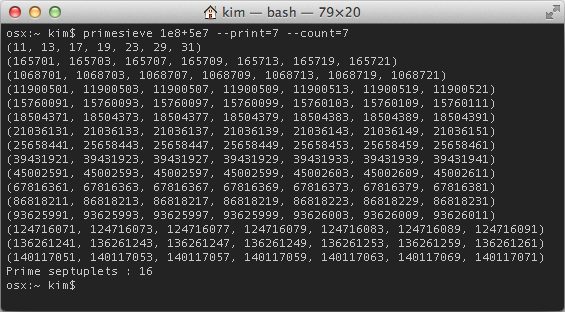
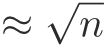
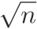

About
primesieve is a free (BSD-licensed) software program and C/C++ library for fast prime number generation. It generates the primes below 10^9 in just 0.2 seconds on a single core of an Intel Core i7-4770 CPU from 2013. primesieve can generate primes and prime k-tuplets (twin primes, prime triplets, ...) up to 2^64.
Screenshot
The above screenshot shows the first 16 prime septuplets (7-tuplets) generated using the primesieve console application. The screenshot page contains more pictures.
Algorithms
primesieve generates primes using the segmented
sieve of
Eratosthenes with
wheel
factorization, this algorithm has a complexity of
operations and uses
 space.
space.
Segmentation is currently the best known practical improvement to
the sieve of Eratosthenes. Instead of sieving the interval
2n at once one subdivides the sieve interval into a
number of equal sized segments that are then sieved consecutively.
Segmentation drops the memory requirement of the sieve of Eratosthenes
from
to .
The segment size is usually chosen to fit into the CPU's fast L1 or L2
cache memory which significantly speeds up sieving. A segmented
version of the sieve of Eratosthenes was first published by Singleton
in 1969 [1]. Here is a simple implementation
of the segmented sieve of Eratosthenes.
Wheel factorization is used to skip multiples of small primes. If a kth wheel is added to the sieve of Eratosthenes then only those multiples are crossed off that are coprime to the first k primes, i.e. multiples that are divisible by any of the first k primes are skipped. The 1st wheel considers only odd numbers, the 2nd wheel (modulo 6) skips multiples of 2 and 3, the 3rd wheel (modulo 30) skips multiples of 2, 3, 5 and so on. Pritchard has shown in [2] that the running time of the sieve of Eratosthenes can be reduced by a factor of if the wheel size is  but for cache reasons the sieve of Eratosthenes usually performs best with a modulo 30 or 210 wheel. Sorenson explains wheels in [3].
Additionally primesieve uses Tomás Oliveira e Silva's cache-friendly bucket list algorithm if needed [4]. This algorithm is relatively new it has been devised by Tomás Oliveira e Silva in 2001 in order to speed up the segmented sieve of Eratosthenes for prime numbers past 32 bits. The idea is to store the sieving primes into lists of buckets with each list being associated with a segment. A list of sieving primes related to a specific segment contains only those primes that have multiple occurrence(s) in that segment. Whilst sieving a segment only the primes of the related list are used for sieving and each prime is reassigned to the list responsible for its next multiple when processed. The benefit of this approach is that it is now possible to use segments (i.e. sieve arrays) smaller than  without deteriorating efficiency, this is important as only small segments that fit into the CPU's L1 or L2 cache provide fast memory access.
Implementation
primesieve is written entirely in C++ and does not depend on external libraries [5]. Its speed is mainly due to the segmentation of the sieve of Eratosthenes which prevents cache misses when crossing off multiples in the sieve array and the use of a bit array instead of the more widely used boolean array. Below is a list of the optimizations used in primesieve:
- Uses a bit array with 8 flags each 30 numbers for sieving
- Pre-sieves multiples of small primes ≤ 19
- The sieving primes are being compressed to improve cache efficiency [6]
- Starts crossing off multiples at the square
- Uses a modolo 210 wheel that skips multiples of 2, 3, 5 and 7
- Uses specialized algorithms for small, medium and big sieving primes
- Two sieving primes are processed per loop iteration to increase instruction-level parallelism
- Parallelized (multi-threaded) using OpenMP
The Build From Source page contains more technical implementation details.
C++ library
Below is an example that shows how to generate primes in C++ using libprimesieve. You can browse primesieve's API online. The Build From Source page explains how to build libprimesieve and how to link against it.
#include <primesieve.hpp>
#include <iostream>
#include <vector>
int main()
{
// store the primes below 1000
std::vector<int> primes;
primesieve::generate_primes(1000, &primes);
primesieve::iterator pi;
uint64_t prime;
// iterate over the primes below 10^9
while ((prime = pi.next_prime()) < 1000000000)
std::cout << prime << std::endl;
return 0;
}
C bindings
primesieve provides C bindings for all its functions, please refer to http://primesieve.org/api for more information.
Performance
primesieve generates the first 50,847,534 primes up to 10^9 in just 0.2 seconds on a single core of an Intel Core i7-4770 3.4GHz (year 2013), this is about 50 times faster than an ordinary C/C++ sieve of Eratosthenes implementation and about 10,000 times faster than trial-division. primesieve outperforms the author's older ecprime (fastest from 2002 to 2010) by about 30 percent and also substantially outperforms primegen the fastest sieve of Atkin implementation on the web. Here is a list of other fast sieve of Eratosthenes implementations.
Timings
| x | Prime Count |
Intel Core i5-670 (2 x 3.47GHz, 32K L1 Data Cache) |
AMD Phenom II X4 945 (4 x 3.0GHz, 64K L1 Data Cache) |
Intel Core i7-4770 (4 x 3.4GHz, 32K L1 Data Cache) |
| 107 | 664,579 | 0.00s | 0.00s | 0.00s |
| 108 | 5,761,455 | 0.01s | 0.01s | 0.01s |
| 109 | 50,847,534 | 0.11s | 0.06s | 0.05s |
| 232 | 203,280,221 | 0.54s | 0.26s | 0.23 |
| 1010 | 455,052,511 | 1.29s | 0.66s | 0.57 |
| 1011 | 4,118,054,813 | 16.11s | 8.57s | 6.63s |
| 1012 | 37,607,912,018 | 208.63s | 122.02s | 77.79s |
| 1013 | 346,065,536,839 | 2629.84s | 1664.68s | 926.83 |
The above benchmarks were run on a 64-bit Linux operating
system and primesieve was compiled using
GCC 4.8. For each benchmark
primesieve used all available CPU cores and the sieve size was set to
the CPU's L1 data cache size per core (Intel: 32 kilobytes, AMD: 64
kilobytes).
CPU scaling

The above CPU scaling benchmark was run on a system with 8 physical CPU cores and 23 GB of memory. At each start offset the primes inside an interval of size 10^11 were counted using different numbers of threads. As one can see primesieve scales well if the interval is sufficiently large.
References and notes
- R. C. Singleton, "An efficient prime number generator", Communications of the ACM 12, 563-564, 1969.
- Paul Pritchard, "Fast compact prime number sieves (among others)", Journal of Algorithms 4 (1983), 332-344.
- Jonathan Sorenson, "An analysis of two prime number sieves", Computer Science Technical Report Vol. 1028, 1991.
- Tomás Oliveira e Silva, "Fast implementation of the segmented sieve of Eratosthenes", 2002.
- The primesieve GUI application (screenshot) depends on the Qt framework.
- Actually it is not the sieving primes that are being compressed but their sieve and wheel indexes.